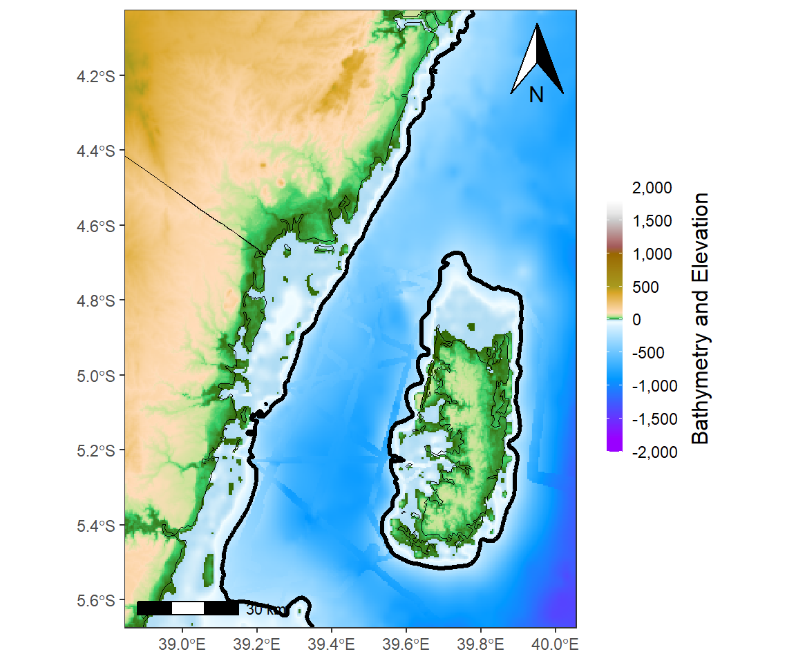

Getting GEBCO Bathymetry Data and glean the power of terra and tidyterra packages for raster and vector objects
Manipulation
Visualization
R
![]()
Introduction
As an Oceanography, one key parameter that need to get right is the bathymetry. Bathymetry is the science of determining the topography of the seafloor. Bathymetry data is used to generate navigational charts, seafloor profile, biological oceanography, beach erosion, sea-level rise, etc. There pretty of bathymetry data and one of the them is the GEBCO Gridded Bathymetry Data. In this post we are going to learn how to access the bathymetry dataset from GEBCO website, import the dataset into R session and make plots to reveal the elevation and bathymetry of the Pemba Channel. In addtional, the post provide an glimpse of the new packages for handling raster dataset in R. The packages I am goint to introduce to you are terra and tidyterra, that have changed the way R handles raster and vector objet and improved both the processing of raster objects and visualization.
Dataset
The General bathymetric Chart of the Oceans (GEBCO) consists of an international group of experts in ocean mapping. This team provides the most authoritative publicly-available bathymetry of the world’s oceans. In this post i will illustrate how to download data from their website and use for mapping. You can obtain the data for your region of interest or for the global oceans. You can download the data from GEBCO. For this case I have downloaded the data for East African Coast as netCDF file by specifying the geogrpahical extent and choose the file type as shown in Figure 1.
To process the data and visualize in maps, we need several packages highlighted in the chunk below. You need to load the packages in your session first. If not in your machine, you need to install them first.
Then read the file using nc_open function of the ncdf4 package (Pierce 2017) and print the file to see the metadata that describe the variables that are embedded in the file.
File d:/semba/shapefile/gebco/gebco_2021_n2.0_s-15.0_w35.0_e50.0.nc (NC_FORMAT_CLASSIC):
1 variables (excluding dimension variables):
short elevation[lon,lat]
standard_name: height_above_mean_sea_level
long_name: Elevation relative to sea level
units: m
grid_mapping: crs
sdn_parameter_urn: SDN:P01::ALATZZ01
sdn_parameter_name: Sea floor height (above mean sea level) {bathymetric height}
sdn_uom_urn: SDN:P06::ULAA
sdn_uom_name: Metres
2 dimensions:
lat Size:4080
standard_name: latitude
long_name: latitude
units: degrees_north
axis: Y
sdn_parameter_urn: SDN:P01::ALATZZ01
sdn_parameter_name: Latitude north
sdn_uom_urn: SDN:P06::DEGN
sdn_uom_name: Degrees north
lon Size:3600
standard_name: longitude
long_name: longitude
units: degrees_east
axis: X
sdn_parameter_urn: SDN:P01::ALONZZ01
sdn_parameter_name: Longitude east
sdn_uom_urn: SDN:P06::DEGE
sdn_uom_name: Degrees east
36 global attributes:
title: The GEBCO_2021 Grid - a continuous terrain model for oceans and land at 15 arc-second intervals
summary: The GEBCO_2021 Grid is a continuous, global terrain model for ocean and land with a spatial resolution of 15 arc seconds.The grid uses as a 'base-map' Version 2.2 of the SRTM15+ data set (Tozer et al, 2019). This data set is a fusion of land topography with measured and estimated seafloor topography. It is augmented with gridded bathymetric data sets developed as part of the Nippon Foundation-GEBCO Seabed 2030 Project.
keywords: BATHYMETRY/SEAFLOOR TOPOGRAPHY, DIGITAL ELEVATION/DIGITAL TERRAIN MODELS
Conventions: CF-1.6, ACDD-1.3
id: DOI: 10.5285/c6612cbe-50b3-0cff-e053-6c86abc09f8f
naming_authority: https://dx.doi.org
history: Information on the development of the data set and the source data sets included in the grid can be found in the data set documentation available from https://www.gebco.net
source: The GEBCO_2021 Grid is the latest global bathymetric product released by the General Bathymetric Chart of the Oceans (GEBCO) and has been developed through the Nippon Foundation-GEBCO Seabed 2030 Project. This is a collaborative project between the Nippon Foundation of Japan and GEBCO. The Seabed 2030 Project aims to bring together all available bathymetric data to produce the definitive map of the world ocean floor and make it available to all.
comment: The data in the GEBCO_2021 Grid should not be used for navigation or any purpose relating to safety at sea.
license: The GEBCO Grid is placed in the public domain and may be used free of charge. Use of the GEBCO Grid indicates that the user accepts the conditions of use and disclaimer information: https://www.gebco.net/data_and_products/gridded_bathymetry_data/gebco_2019/grid_terms_of_use.html
date_created: 2021-07-01
creator_name: GEBCO through the Nippon Foundation-GEBCO Seabed 2030 Project
creator_email: gdacc@seabed2030.org
creator_url: https://www.gebco.net
institution: On behalf of the General Bathymetric Chart of the Oceans (GEBCO), the data are held at the British Oceanographic Data Centre (BODC).
project: Nippon Foundation - GEBCO Seabed2030 Project
creator_type: International organisation
geospatial_bounds: -180
geospatial_bounds: -90
geospatial_bounds: 180
geospatial_bounds: 90
geospatial_bounds_crs: WGS84
geospatial_bounds_vertical_crs: EPSG:5831
geospatial_lat_min: -90
geospatial_lat_max: 90
geospatial_lat_units: degrees_north
geospatial_lat_resolution: 0.00416666666666667
geospatial_lon_min: -180
geospatial_lon_max: 180
geospatial_lon_units: degrees_east
geospatial_lon_resolution: 0.00416666666666667
geospatial_vertical_min: -10977
geospatial_vertical_max: 8685
geospatial_vertical_units: meters
geospatial_vertical_resolution: 1
geospatial_vertical_positive: up
identifier_product_doi: DOI: 10.5285/c6612cbe-50b3-0cff-e053-6c86abc09f8f
references: DOI: 10.5285/c6612cbe-50b3-0cff-e053-6c86abc09f8f
node_offset: 1Looking on the metadata, we notice that there are three variables we need to extract from the file, these are longitude, latitude and depth. We use a ncvar_get function from ncdf4 (Pierce 2017) package to extract these variables. Note the name parsed in the function as should written as they appear in the metadata.
Then we can check the type of the file using a class function
We notice these objects comes as array. we can check the size also
We also notice that while lon and lat object are array, but they are vector and only bathy is the matrix. Therefore, we need to make a data frame so that we can make plots using ggplot package, which only work in the dataset that is organized as data.frame or tibble. That can be done using a expand.grid function. First we expand the lon and lat file followed with the bathy and combine them to make a tibble as the chunk below highlight. Because of the file size, only bathymetric values that fall within the pemba Channel were selected.
Separate the dataset into the land and ocean based on zero (0) value as reference point, where the above sea level topography values are assumed
Load the basemap shapefile
Make a color of land and depth that we will use later for mapping the topography and bathymetry, respectively.
We can plot the bathymetry shown in @ fig-bathy with the code highlighted in the chunk below
ggplot()+
metR::geom_contour_fill(data = ocean, aes(x = lon, y = lat, z = depth),
bins = 120, global.breaks = FALSE) +
metR::geom_contour2(data = ocean, aes(x = lon, y = lat, z = depth,
label = ..level..), breaks = c(-200,-600), skip = 0 )+
scale_fill_gradientn(colours = ocean.pal, name = "Depth (m)",
breaks = seq(-1800,0,300), label = seq(1800,0,-300))+
ggspatial::layer_spatial(data = africa)+
coord_sf(xlim = c(38.9,40), ylim = c(-5.6,-4.1))+
theme_bw(base_size = 12)+
theme(axis.title = element_blank())+
ggspatial::annotation_scale()Similary, we can plot togopgraphy of the area shown in Figure 3 using the code shown below
ggplot()+
metR::geom_contour_fill(data = land, aes(x = lon, y = lat, z = depth),
bins = 120, show.legend = TRUE) +
metR::geom_contour2(data = land, aes(x = lon, y = lat, z = depth),
breaks = c(200), skip = 0 )+
scale_fill_gradientn(colours = land.pal, name = "Topography",
trans = scales::sqrt_trans())+
ggspatial::layer_spatial(data = africa, fill = NA)+
coord_sf(xlim = c(38.9,40), ylim = c(-5.6,-4.1))+
theme_bw(base_size = 12)+
theme(axis.title = element_blank())The modern approach
In R ecosystem, the traditional handling of spatial data– raster and vector has changed dramatically in recent years. The widely used raster (Hijmans 2017) and sp (Bivand, Pebesma, and Gomez-Rubio 2013) packages dominated spatial analysis in R for decades. This has changed recent with the introduction of new and more convinient packages. These packages include terra, which has functions for creating, reading, manipulating, and writing raster data (Hijmans 2022). The terra package provides, among other things, general raster data manipulation functions that can easily be used to develop more specific functions. The package also implements raster algebra and most functions for raster data manipulation.
terra replaces the raster package. The interfaces of terra and raster are similar, but terra is simpler, faster and can do more. The sister package to terra is tidyterra (Hernangómez 2023). tidyterra is a package that add common methods from the tidyverse (Wickham and Wickham 2017) for SpatRaster and SpatVectors objects created with the terra package. It also adds specific geom_spat*() functions for plotting these kind of objects with ggplot2 (Wickham 2016).
Let’s load the packages
Then we use a function rast from terra package to read raster file from the working directory of the local machine.
Then we print the the bathymetry file that we just imported
class : SpatRaster
dimensions : 4080, 3600, 1 (nrow, ncol, nlyr)
resolution : 0.004166667, 0.004166667 (x, y)
extent : 35, 50, -15, 2 (xmin, xmax, ymin, ymax)
coord. ref. : lon/lat WGS 84
source : gebco_2021_n2.0_s-15.0_w35.0_e50.0.nc
varname : elevation (Elevation relative to sea level)
name : elevation
unit : m The printed output is the metadata of the spatRaster with information that can assist to clear understand the file. I am not going into detail into it but he coord. ref. field shows lon/lat WGS 84, which is Geographic Coordinates with Datum WGS 84. If you just want to know the CRS from a SpatRaster, you just call crs() You also notice that the varname is the elevation, but in fact this dataset contain the altitude (elevation) for land and depth (bathymetry) for ocean and the unit of the measurement are in meters. Since the dataset is the raste, it provide the grid resolution of 0.004166667 degree, which is equivalent to a spatial resolution of 500 meters grid.
The geographical extent of the file is quite big range from longitude 35 to 50 and latitude -15 to 2. Since we only focus for the Pemba Channel, we need to crop the spatRaster to our area of interest. terra package has crop function for that but, thi function requires us to purse a file that has defined geographical extent. The extent can easily defined using ext function, also from terra package. The geographical extent of our area ranged from longitude 38 to 41 and latitude -6.2 to -3.
pemba.ext = terra::ext(38,41,-6.2,-3.8)
gebco.pemba = terra::crop(
x = gebco,
y = pemba.ext
)
gebco.pembaclass : SpatRaster
dimensions : 576, 720, 1 (nrow, ncol, nlyr)
resolution : 0.004166667, 0.004166667 (x, y)
extent : 38, 41, -6.2, -3.8 (xmin, xmax, ymin, ymax)
coord. ref. : lon/lat WGS 84
source(s) : memory
name : elevation
min value : -2610
max value : 2247 The printed metadata indicated that the geographical extent meet what we defined above but it also provide the minimum and maximum values of the bathymetry and elevation values. tidyterra makes us use similar verbs of tidyverse to raster objects similar to tibble objects. For example, in the Pemba.gebco we can first filter and strip all elevation grid (elevation >0) and rename the elevation into depth with rename function and then use as.data.frame function from terra to convert spatRaster object to tibble. The chunk below summarise the above explanation;
In addition of making tidyverse verbs that suits for tibble for manipulation of raster objects, tidyterra brings function for plotting raster object with ggplot2. A geom_spatraster function has enabled ability of plotting both elevation and bathymetry with color gradient that distinguish these layers in a more appealing form. It also has geom_spatraster_contour function for plotting contour from raster in ggplot. Simple feature and shapefile are also plotted with geom_spatvector function. The chunk below contains lines that illustrates the above explanation and rendered to generate Figure 4.
ggplot() +
geom_spatraster(data = gebco.pemba, show.legend = TRUE)+
geom_spatraster_contour(data = gebco.pemba, breaks = c(-200),
linewidth = 1.2, color = "black") +
geom_spatvector(data = africa, fill = NA, color = "black")+
geom_sf_text(data = africa, aes(label = str_to_upper(CNTRY_NAME)),
size = 2.3, check_overlap = TRUE)+
coord_sf(xlim = c(38.9,40), ylim = c(-5.6,-4.1))+
theme_bw() +
theme(legend.position = "right", axis.title = element_blank())+
ggspatial::annotation_north_arrow(location = "tr",
height = unit(1.5, "cm"),
width = unit(1, "cm"),
pad_x = unit(0.25, "cm"),
pad_y = unit(0.25, "cm"),
rotation = NULL)+
ggspatial::annotation_scale(location = "bl")+
scale_fill_hypso_tint_c(
palette = "gmt_globe",
labels = scales::label_number(big.mark = ","),
limits = c(-2000,2000),
breaks = seq(-3000,3000,500),
guide = guide_colorbar(
title = "Bathymetry and Elevation",
title.hjust = .5,
direction = "vertical",
title.position = "right",
title.theme = element_text(angle = 90),
barheight = 10,
barwidth = .60)
)
Cited Materials
Bivand, Roger S., Edzer Pebesma, and Virgilio Gomez-Rubio. 2013. Applied Spatial Data Analysis with R, Second Edition. Springer, NY. https://asdar-book.org/.
Hernangómez, Diego. 2023. tidyterra: Tidyverse Methods and Ggplot2 Helpers for Terra Objects (version 0.3.1). https://doi.org/10.5281/zenodo.6572471.
Hijmans, Robert J. 2017. Raster: Geographic Data Analysis and Modeling. https://CRAN.R-project.org/package=raster.
———. 2022. Terra: Spatial Data Analysis. https://CRAN.R-project.org/package=terra.
Pierce, David. 2017. Ncdf4: Interface to Unidata netCDF (Version 4 or Earlier) Format Data Files. https://CRAN.R-project.org/package=ncdf4.
Wickham, Hadley. 2016. Ggplot2: Elegant Graphics for Data Analysis. Springer-Verlag New York. https://ggplot2.tidyverse.org.
Wickham, Hadley, and Maintainer Hadley Wickham. 2017. Tidyverse: Easily Install and Load the ’Tidyverse’. https://CRAN.R-project.org/package=tidyverse.